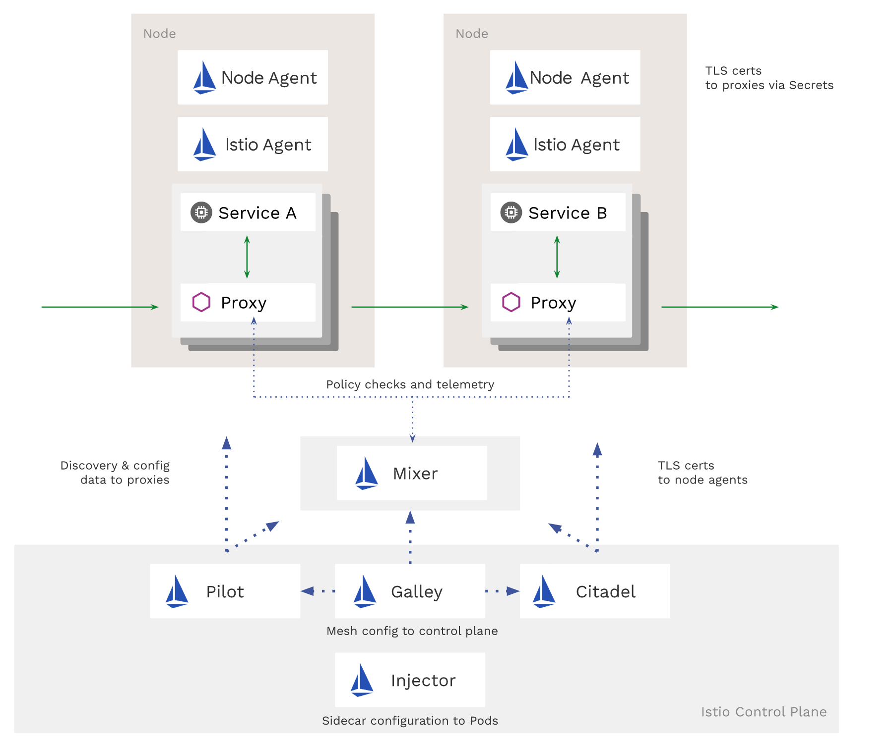
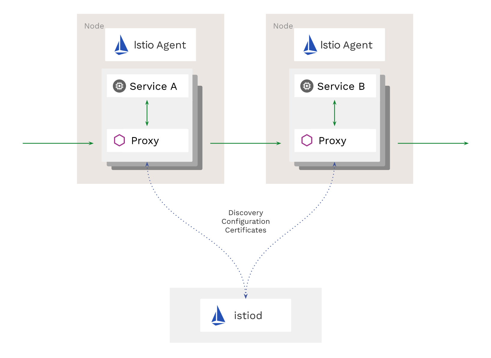

翻译 Istio 官网 blog 文章，原文：https://istio.io/blog/2020/tradewinds-2020/。
Istio 解决了人们在运行微服务时遇到的实际问题。甚至非常早期的预发布版本也帮助用户调试其系统结构中的延迟问题，帮助提高服务的可靠性，并且透明地保护了火墙后的通信。
去年，Istio 项目经历了非常大的成长。经过了 9 个月酝酿才在第一季度发布了 1.1 的版本，之后我们设定了一个按季度为节奏发布的目标。我们知道始终如一并且可预见地交付实现是很重要的。我们计划后面三个季度发布三个版本，并且成功的做到了，为此我们非常自豪。
在去年后期的 3 个版本中，我们改进了构建和测试基础设，从而有了更高的质量和更快捷的发布周期。我们通过增加许多命令让操作和调试服务网格更容易，一次加倍提升用户体验。我们同样看到参与贡献 Istio 项目的人员和公司大幅度增加，这也让我们最终在 GitHub 增长最快的十大项目中排名第四！
在 2020 年 Istio 有更雄伟的目标，并且很多重大工作已经在进行了，但是同时我们也坚信好的基础设施应该是“无知”的。在生产中使用 Istio 应该是一种无缝的体验；性能不应该是问题，升级不应该是个什么大事，并且复杂的任务应该自动化。随着我们对一个更强大的可扩展性的迭代投入，我们认为随着 Istio 专注用户体验提升的同时会加快服务网格空间的创新步伐。 下面是更多 2020 主要工作的详情。
更流畅，更平滑，更快
Istio 从其建设之初就提供了可扩展性，是通过叫做 Mixer 的一个组件来实现的。Mixer 是一个平台，在 Mixer 上允许自定义适配器来充当数据平面和用于策略或遥测后端之间的中介。不过因为 Mixer 要求扩展是在进程外，因此增加了不必要的请求开销。 所以我们正在向一种模式发展：直接在代理内部启用扩展。
大多数 Mixer 用于执行策略的用例已经通过 Istio 的认证和授权)策略实现了， 这些策略允许直接在代理中控制 workload 到 workload，终端用户到 workload 的认证。公共监控用例也已经迁移到了代理中，我们为发送遥测信息到 Prometheus 和 Stackdriver 而引入代理内支持。
我们的基准测试显示新的遥测模型显著降低了延迟，并有业界领先的性能，延迟和 CPU 消耗都减少了 50%。
新的 Istio 扩展模型
在这个模型中用在 Envoy 中引入扩展，替换掉了 Mixer 的方式，这样可以提供更多的能力。Istio 社区正在带领在 Envoy 中实现 WebAssembly (Wasm) 运行时，这种方式可以以模块化，沙箱的方式实现扩展，并且可以支持使用超过 20 种语言。代理可以在持续服务的情况下动态加载和重载扩展。Wasm 扩展同样也将能够以 Mixer 无法做到的方式扩展平台。它们可以充当自定义协议处理程序，并在通过 Envoy 时转换有效负载 — 简而言之，它们可以执行与构建到 Envoy 中的模块相同的事情。
我们正在与 Envoy 社区合作，寻找发现和分发这些扩展的方法。我们想让 WebAssembly 扩展像容器一样易于安装和运行。许多合作伙伴已经编写了 Mixer 适配器，并且和我们一起把他们移植到了 Wasm 上。我们也在开发教如何编写自定义集成扩展的指引和代码教程。
通过改变扩展模式，我们也能扔掉大量 CRD。不再需要为与 Istio 集成的每一个软件都提供唯一的 CRD 了。
使用 preview 配置文件安装 Istio 1.5 不会安装 Mixer。如果你从前一个版本进行升级，或者使用 default 配置文件安装，为了安全起见仍然会保留 Mixer。当使用 Prometheus 或者 Stackdriver 来收集度量指标，建议尝试新模式来看看性能提升了多少。
如果有需要你可以保留安装 Mixer 并启用它。最终，Mixer 会成为 Istio 的一个独立组件发布，这也是 istio 生态的一部分。
更少组件
我们也会简化控制平面其它部分的部署。为此，我们把控制平面的几个组件合成了一个组件：Istiod。这个二进制程序包含了 Pilot，Citadel，Galley，和 sidecar 注入器的所有功能。这个实现改进了 Istio 管理和安装的许多问题 – 减少安装和配置复杂性，减少维护工作，提升问题诊断响应的时间。关于 Istiod 的更多信息请阅读 Christian Posta 的这篇博文。（这里顺便说一下，这篇博文我也已经翻译了点击这里查看）
我们将 istiod 作为 1.5 中所有配置文件的默认配置。
为了减少每个节点的空间占用，我们干掉了用于分发证书的 node-agent，并且把它的功能迁移到了 istio-agent， istio-agent 已经是在每个 Pod 中了，我们正从这个图中所示的架构

向这个架构发展。

在 2020 年，我们将持续建设以实现我们的“零配置”默认目标，无需更改任何应用程序配置即可享用大多数 Istio 的功能。
生命周期管理优化
为了改进 Istio 的生命周期管理，我们迁移到了一个基于 operator 的安装。引入了 IstioOperator CRD 和 2 钟安装模式 ：
- 人工触发：使用 istioctl 来应用配置到集群上。
- 机器触发：用一个控制器监听 CRD 的变动，并且实时应用配置。
在 2020 年更新升级将会更容易。我们会增加支持金丝雀方式发布 Istio 控制平面的新版，这样可以让新版本和现存版本同时运行，再逐渐的切换数据平面到新的版本上。
默认安全策略
Istio 已经为强壮的服务安全提供了基础能力：可靠的 workload 身份，强健的访问策略和综合审计日志。我们正在为这些特性稳固 API；很多 Alpha 版本的 API 在 1.5 中已经是 Beta 版本了，我们希望它们在 2020 年底的时候都以成为 v1 稳定版。更多关于 API 状态的信息，请看特性页面。
默认网络流量也会变的更安全。经过之前很多用户的使用，自动启用双向 TLS 已经成为 Istio 1.5 中的推荐实践。
此外，我们会让 Istio 需要更少的权限，并且简化它的依赖，从而使它成为一个更强大的系统。以前，你必须使用 Kubernetes Secrets 挂载证书给 Envoy，作为文件一样挂载到每个代理上。现在通过 Secret Discovery Service 我们可以安全地分发这些证书，而不必担心它们被机器上的其它 workloads 截获。这种模式也将会变成 1.5 中的默认做法。
放弃 node-agent 不仅简化了部署，而且也消除了集群内对 PodSecurityPolicy 的要求，从而进一步改善了集群的安全性。
其它功能
Here’s a snapshot of some more exciting things you can expect from Istio in 2020: 在 2020 年，Istio 会让人期待兴奋的一些事情的简要说明：
- 和更多托管的 Kubernetes 环境集成 - 由 Istio 支持的服务网格供应商有 15 家，包括了 Google，IBM，Red Hat， VMware，Alibaba 和 华为。
- 在
istioctl上会投入更多，以及它帮助诊断问题的能力 - 可以更好的集成基于 VM 的 workloads 到网格中
- 持续努力，可以更容易配置、管理、运行多集群和多网络环境
- 和更多服务发现系统集成，包括 Functions-as-a-Service
- 实现新的 Kubernetes service API，目前正在开发。
- 可以追踪功能开发的增强仓库。
- 让 Istio 脱离 Kubernetes 也可以方便的运行！
从大海到天空，我们会很高兴看到你将 Istio 带向何处。
关注「黑光技术」，关注大数据+微服务